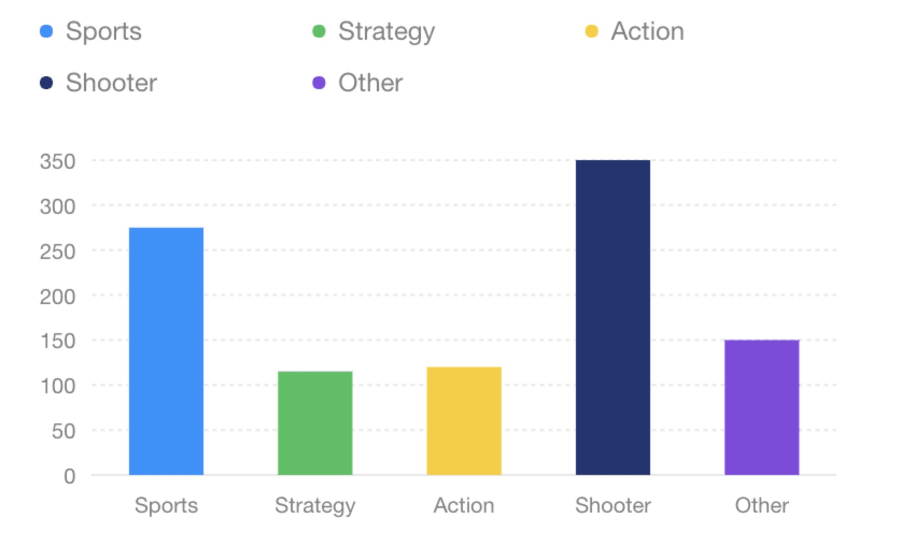

html中创建antv f2图表
既可以通过将脚本下载到本地也可以直接引入在线资源。
1
2
3
|
<!-- 引入在线资源 -->
<script src="https://gw.alipayobjects.com/os/antv/assets/f2/3.4.2/f2.min.js"></script>
<!-- 友情提醒：请按需更新版本号。 -->
|
1
2
|
<!-- 引入本地脚本 -->
<script src="./f2.js"></script>
|
- 1.创建canvas标签
- 2.编写图表绘制代码
- 创建 Chart 图表对象，指定图表 ID、指定图表的宽高、边距等信息；
- 载入图表数据源；
- 使用图形语法进行图表的绘制；
- 渲染图表。
代码如下
1
2
3
4
5
6
7
8
9
10
11
12
13
14
15
16
17
18
19
20
21
22
23
24
25
26
27
28
29
30
|
<canvas id="myChart" width="400" height="260"></canvas>
<script src="https://gw.alipayobjects.com/os/antv/assets/f2/3.4.2/f2.min.js"></script>
<script>
const data = [
{ genre: 'Sports', sold: 275 },
{ genre: 'Strategy', sold: 115 },
{ genre: 'Action', sold: 120 },
{ genre: 'Shooter', sold: 350 },
{ genre: 'Other', sold: 150 },
];
// Step 1: 创建 Chart 对象
const chart = new F2.Chart({
id: 'myChart',
pixelRatio: window.devicePixelRatio, // 指定分辨率
});
// Step 2: 载入数据源
chart.source(data);
// Step 3：创建图形语法，绘制柱状图，由 genre 和 sold 两个属性决定图形位置，genre 映射至 x 轴，sold 映射至 y 轴
chart
.interval()
.position('genre*sold')
.color('genre');
// Step 4: 渲染图表
chart.render();
</script>
|
此时你可以看到这样一张图

React中创建antv f2图表
在react中创建和html步骤相似，唯一区别的是，需要将图表创建挂载的信息放在初始化的时候。
也就是class组件的componentDidMount()里面，函数式组件的useEffect(() => {}, [])中
代码传送门